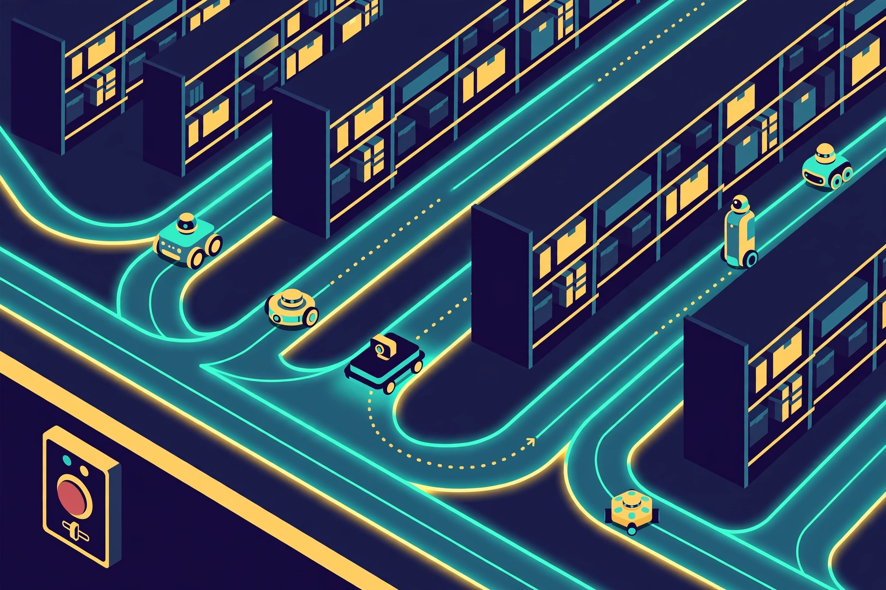
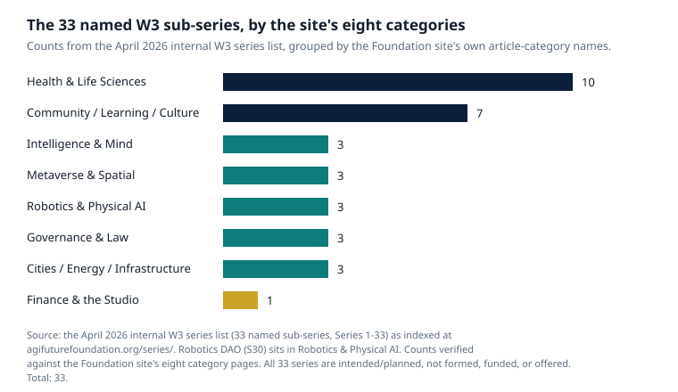

Article 60 · Robotics & Physical AI · AGI Future Foundation
One Fleet, Many Owners: Governing and Answering for Shared Robot Fleets
A warehouse floor used to be a simple place to assign blame. One company owned the building, one vendor supplied the robots, one fleet manager told them where to go, and when something went wrong there was one phone number to call. That world is ending. Facilities now run mixed fleets: pallet movers from one maker, tote robots from another, a tugger from a third, an autonomous forklift from a fourth, all sharing the same aisles, charging points, doors and lifts, and the people walking between them. The robots can see each other. The question is whether anyone can govern them together, and who answers when they fail together.
Robotics DAO long-form series · AGI Future Foundation

Illustration (AI-generated): different makers' robots sharing one floor along coordinated lanes. This is an illustration, not a photograph of a real fleet, facility, or deployment.
A warehouse floor used to be a simple place to assign blame. One company owned the building, one vendor supplied the robots, one fleet manager told them where to go, and when something went wrong there was one phone number to call. That world is ending. Facilities now run mixed fleets: pallet movers from one maker, tote robots from another, a tugger from a third, an autonomous forklift from a fourth, all sharing the same aisles, charging points, doors and lifts, and the people walking between them. The robots can see each other. The question is whether anyone can govern them together, and who answers when they fail together.
The technical side of the problem is being solved faster than the governance side, and that gap is the story. The industry has spent the last few years building the shared language that lets robots from different makers coordinate. The law has spent the same years deciding who is responsible when coordination fails. The DAO idea, applied to machines, sits exactly in the gap between the two: a way for many owners to govern one fleet without any single owner becoming the boss of everyone else's robots. Whether that idea works depends on details that most DAO writing never reaches, because most DAOs govern tokens and treasuries, not machines that move.
The fleet is the unit now
The industry's answer has been to standardise the conversation rather than the robots. VDA 5050, the communication standard developed for automated guided vehicles and autonomous mobile robots, defines how a master control system and mobile robots exchange structured operational information: how missions are described, how robots acknowledge tasks, how operational status is reported, and how errors are communicated. It is deliberately not a robot operating system, a navigation algorithm, or a fleet management application. It is a communication rulebook, built in practice on MQTT messaging with JSON payloads, that leaves navigation, obstacle avoidance, and SLAM proprietary to each manufacturer while making the fleet-level conversation common. A fleet manager that speaks VDA 5050 can assign work to robots from several vendors through one interface instead of building a custom integration for each one. It does not by itself guarantee plug-and-play operation: optional actions, map concepts, error codes, localisation states, load handling, and vendor extensions still need verification, and the evaluation that matters is at the workflow level, not the protocol level alone.
Above the protocol sits the orchestration layer, and here the open-source world has produced the most interesting tool. Open-RMF, the Open Robotics Middleware Framework, is a free, open-source, modular system that enables sharing and interoperability between multiple robot fleets and physical infrastructure such as doors, elevators, and building-management systems. Its purpose is coordination above an individual robot or vendor fleet: traffic scheduling tools reserve routes and address conflicts so robots do not independently claim incompatible space, higher-level work can be assigned across fleets instead of being tied to one vendor's manager, and adapters let the system command infrastructure as well as robots. It is built on the ROS 2 ecosystem as its component and communication foundation, and it is one of the four projects now governed under the Open Source Robotics Alliance, alongside ROS itself, the Gazebo simulator, and the shared infrastructure that supports them.
The newest step in this direction arrived in October 2026, when the International Organization for Standardization published ISO 21423:2026, a standard for communication and interoperability among industrial mobile robots regardless of vendor or model. Developed by ISO Technical Committee 299 and announced by the Association for Advancing Automation, it specifies how industrial mobile robots, fleet managers, and other equipment exchange information and request actions: robots share location, speed, direction, condition, tasking, and availability with each other, and the standard also covers communication with machines tended by robots, enterprise resource planning tools, and building systems such as lifts, automated doors, and alarms. People using mobile devices can share similar information, so their work can be coordinated alongside the robots. It is the first non-safety robot standard the A3 has helped produce, and its significance is practical rather than ceremonial: a buyer no longer has to ask which vendor to standardise on, but which robot best fits each task, because the coordination layer is common.
Put together, these three layers form a stack that a governance body could actually stand on. VDA 5050 gives the fleet a common language. Open-RMF gives it a common traffic brain. ISO 21423 gives it a common, internationally recognised basis for communication across vendors. None of them, however, answers the governance questions. A shared language does not decide who may speak. A traffic scheduler does not decide who may override it. A standard does not decide who pays when two robots, each behaving correctly by its own lights, meet in an aisle that both were told was theirs. Those decisions belong to whoever governs the fleet, and in a mixed fleet that governor is, by definition, not any single robot maker.
Who decides: the DAO question, honestly asked
A decentralised autonomous organisation is, at its simplest, a group of people who coordinate through rules written in software: smart contracts that hold funds, record votes, and execute decisions automatically. Members propose, members vote, and the code carries out the result. The model grew up governing treasuries and protocols, where the stakes are financial and the assets are digital. Applying it to a fleet of physical machines changes the stakes in three ways that matter, and any honest account of a Robotics DAO has to start with them.
The first change is that the assets can hurt people. A treasury vote that goes wrong loses money. A fleet vote that goes wrong sends a machine into a space where a person is standing. That means the governance of a robot fleet cannot be a purely on-chain affair, where a token vote is the final word. There has to be a human who can stop a robot, in the room, right now, without waiting for a vote to close. The Foundation's intended model already draws this line: agents operate day-to-day work inside limits set in advance by humans, and a human Steward Council decides everything that creates a legal, financial, or doctrinal consequence. Agents never sign legal documents, never move funds, never hire or fire, never offer securities, and never enact doctrine or charters. Humans execute. For a robot fleet, that line becomes concrete: no vote, no poll, and no agent's readiness flag authorises a machine to move. Movement is authorised by a named human, under written deployment standards, with a named human accountable on site.
The second change is that the members are not equal in the ways that matter. In a token-weighted DAO, a member holding 10,000 governance tokens has ten times the voting power of someone holding 1,000, and data from major DAOs shows the top 10 percent of token holders frequently controlling well over half of all voting power. In a fleet DAO that concentration is a safety risk as well, because the largest token holder may also be the largest fleet owner, the largest customer, or the maker whose robots dominate the floor. A vote about whether to approve or halt a deployment is also a vote about whose machines keep earning. The design question is therefore not only how votes are counted but who gets to vote on what. A plausible answer, and one the Foundation's stewardship model points toward, is to separate the decisions: operational coordination can be handled by software and by agents inside written limits, while the decisions that create consequences (whether a deployment goes ahead, whether it continues, whether it stops) are reserved to a human Steward Council deciding by signed votes, with stewards who are named, consenting humans holding real keys and signing credentials. The Council's three-seat, two-of-three design in the Foundation's corporate files is specific for exactly this reason: it is small enough to act, and it requires more than one person to agree before anything consequential happens.
The third change is that a DAO without a legal wrapper is, in the eyes of the law, a partnership, and partnerships have a liability rule that most DAO members have never heard of. A DAO that has not registered as a formal legal entity does not exist in a legal vacuum: courts have treated an unregistered DAO as a general partnership, which means every member is potentially liable, jointly and severally, for the organisation's debts and legal liabilities. If someone sues the DAO and wins, they can pursue individual members' personal assets to satisfy the judgment. The point was made concrete in the Ooki DAO case, where the US Commodity Futures Trading Commission brought enforcement action against a DAO for operating an illegal trading platform. The court held that a DAO qualifies as a "person" under the Commodity Exchange Act and can be held directly liable; the DAO was ordered to pay a civil penalty of $643,542 and received permanent trading and registration bans. The lesson for a fleet DAO is blunt: a group of people who collectively govern robots that operate in the physical world, without a legal entity between them and the harm, are collectively exposed to the consequences of that harm. That is why a handful of states, Wyoming among them, have enacted legislation allowing DAOs to register as a specialised form of limited liability company, giving the DAO legal personhood so it can sign contracts, own property, sue and be sued in its own name, and shield individual members from personal liability beyond their investment. It is also why the Foundation's intended structure places each series inside a Wyoming series LLC in the plan, with legally segregated sub-series, and why the Foundation itself acts as mission gate under written agreements rather than as owner: the legal wrapper is not paperwork for its own sake. It is the thing that stands between a member's personal assets and a robot's mistake.
None of this makes a DAO the wrong shape for governing a fleet. It makes it a shape that has to be built with the liability question answered first, not last. A fleet DAO that starts by writing its voting rules and only later asks who is liable has built the roof before the foundations. The order that makes sense is the reverse: first the legal entity, then the insurance, then the written deployment standards, then the voting rules, and only then the first robot moving under the DAO's name. That order is also the order the Foundation's own proposal flow implies, with its seven stages from intake through mission-fit review, legal assignment, series designation, Steward Council review, human decision, and execution with a dated record, where any stage can stop a proposal. A fleet deployment that cannot survive that flow should not move.
Who answers: liability when a robot acts
Liability is where the abstract idea of a fleet DAO meets the concrete reality of a person who has been hurt. The law has a name for the hardest version of this problem: the responsibility gap. It describes the situation in which an AI system causes harm but no entity can be held accountable for it in its own right, because the harm emerged from a system whose behaviour was shaped by many hands and no single decision. Traditional product liability law holds the manufacturer responsible for defects arising during production, but that rule does not fit cleanly when a defect arises from deployed machine learning that changes a robot's behaviour after it leaves the factory. The European Parliament's 2017 resolution on civil law rules on robotics took a clear position on one tempting shortcut: it rejected the idea that robots could be held responsible for the harm they cause. Robots have always been treated by courts as objects, not as persons legally responsible for their actions, and responsibility is held by the humans and companies behind the systems. Without personhood, an autonomous system cannot be sued, fined, or punished. Someone human has to answer.
Europe has spent the last few years rewriting the answer, and the result matters for any fleet that will ever operate there. The revised EU Product Liability Directive, Directive (EU) 2024/2853, must be turned into national law by EU countries by 9 December 2026, and from that date AI software counts as a product under it. If a defective AI-based product first placed on the EU market from that date injures someone, damages their private property, or destroys their private data, its manufacturer is liable without fault, meaning strict liability, and without any cap. Only individuals can claim, and only for death and personal injury (including medically recognised psychological harm, for example from a robot's movement), damage to property used for private purposes, or destruction of data not used for professional purposes. Pure financial loss is not covered. The concept of manufacturer is deliberately wide: besides hardware makers, it covers software developers, companies that have a product designed or made for them, and anyone presenting a product as its own by putting its name or trademark on it. A manufacturer that builds another company's AI into its robot remains liable for the finished product, including a defective AI component built in within its control, and the AI developer can be liable alongside it, with the injured person able to claim full compensation from either. For non-EU manufacturers, the importer and any authorised representative are each liable in their own right.
Three features of the new directive deserve attention from anyone planning a fleet. First, the exposure is highest exactly where physical AI operates: household and service robots, humanoids, drones, and collaborative robots are named as the areas of greatest exposure. Second, the exclusion of damage to goods or data used for professional purposes may significantly limit claims in business-to-business contexts, but where employees are harmed by the physical AI, they may still claim compensation. A warehouse worker hurt by a robot is not a business-to-business abstraction. Third, there is a notable exception for free and open-source software developed or supplied outside the course of a commercial activity, which is not covered by the directive.
What the directive does not do is equally instructive. The European Commission's proposed AI Liability Directive, which would have harmonised fault-based liability and introduced a rebuttable presumption of causality and enhanced access to evidence to ease the burden of proof for harmed individuals, was withdrawn in February 2025 after no agreement could be reached with the EU legislative bodies. Fault-based claims under national law remain available alongside the new directive, but the harmonised easing of proof that the AI Liability Directive would have provided is gone. The practical consequence is a two-track world: strict liability for defective products under the new directive, and fault-based claims under national law for everything else, with the injured person carrying the ordinary burden of proof in the second track. A fleet governor needs to understand both tracks, because an incident can easily produce claims on either one.
The other half of the liability picture is the operator. The operator who deploys a robotic system and profits from it bears substantial legal liability beyond that of the manufacturer, and the European Parliament's analysis of AI civil liability calls for strict, risk-based operator liability and mandatory insurance, with operators as the parties best positioned to manage real-world deployment risks on a day-to-day basis. If a robot is harmful because it was deployed in a setting for which it was not designed, or because an operator missed important safety updates along the way, then the causal chain is operational and not one of design. Research on legal responsibility in robotics concludes that responsibility should be differentiated by the degree of autonomy and by whether the robot acts independently or alongside a person; with active human oversight at the time of the incident, the common legal model is shared liability between operator and manufacturer. A fleet DAO that deploys robots is, in this analysis, an operator, whatever its voting rules say. It cannot vote itself out of operator liability.
| Actor | What they are answerable for | What does not follow automatically |
|---|---|---|
| Hardware manufacturer | A defect in the physical robot | That every incident is a hardware defect |
| Software / AI provider | A defect in the AI system, treated as a manufacturer under the EU Product Liability Directive | That being the developer proves a defect or causation |
| Deployer / operator | The choice of setting, configuration, monitoring, and updates; may become a provider under Article 25 of the EU AI Act | That deployment alone makes them liable for a design defect |
| Fleet governor (a DAO, if it ever operates) | The decision to approve, continue, or halt a deployment; the standards it set or failed to set | That a vote, a poll, or an agent's readiness flag is a corporate act or a defence |
| Human on site | Supervision in the moment, the stop decision, the record of what happened | That presence alone discharges the employer's duties |
The incident playbook: what has to exist before the first move
Liability rules describe who pays after the fact. A fleet governor's real job is to make the after-the-fact unnecessary, and to make it survivable when it happens anyway. That job has a small number of concrete requirements, and they are worth listing plainly, because they are the test of whether a proposed Robotics DAO is serious.
A named human, on site, for every deployment. Not a role, not a rota, not a wallet address: a person, by name, who is accountable for that deployment and who can stop it. The Foundation's intended model already requires this in general terms, and for robots it is non-negotiable, because a DAO cannot be present when a machine fails.
Written deployment standards, reviewed before deployment. Safety thresholds, supervision arrangements, interlocks, the spaces a robot may enter and the spaces it may not, the conditions under which it stops. Reviewed by counsel and by safety experts, not only by the people who want the deployment to happen. The standards are the deployment gate: a deployment that fails its checks is refused or halted, and the power to refuse is the core of the mandate.
A record that cannot be argued with afterwards. Every robot movement, every task assignment, every override, every stop, logged with time and identity, kept in a form that survives the incident it describes. The EU's withdrawn AI Liability Directive would have eased access to evidence for claimants; its withdrawal means the evidence question is now decided case by case under national law, which is a reason for a fleet governor to keep better records than the law requires, not worse ones.
Insurance, named before deployment. Who is insured, for what, to what limit, and who pays the premium. The European Parliament's analysis calls for mandatory insurance for operators; whether or not any particular jurisdiction makes it mandatory, a fleet without insurance is a fleet whose members are personally exposed, and a DAO without a legal wrapper is a fleet whose members are personally exposed twice over.
A stop that works. A physical, reachable, tested means of halting every robot in the fleet, and a rule that anyone on the floor may use it without asking permission and without fear of consequence.
A remedy, stated in advance. If a robot harms a person or damages property, what happens next: who is contacted, what care is offered, what compensation route exists, and who decides. A remedy discovered after an incident is not a remedy; it is a negotiation conducted by the party with more lawyers.
What Robotics DAO would have to decide
None of the arrangements above exists today for Robotics DAO, because the series itself does not exist yet as an operating entity. That is not a criticism; it is the fact the Foundation's own site states. What this article can usefully do is list the decisions the series would have to make, in order, before its first deployment, so that the gap between the plan and the operation is visible and measurable.
First, the legal form. A Wyoming series LLC designation, or another wrapper, with the liability shield it provides, and a written answer to the question of who the members are and what they are personally exposed to. Second, the insurance. Third, the written deployment standards, and the names of the counsel and safety experts who reviewed them. Fourth, the Steward Council: named, consenting humans holding real keys, deciding by two-of-three signed votes, with the power to refuse or halt a deployment. Fifth, the fleet stack: which coordination layers it will use, VDA 5050, Open-RMF, ISO 21423, or their successors, and what it will do when a robot arrives that speaks none of them. Sixth, the record: what is logged, where it is kept, who can read it, and for how long. Seventh, the remedy: what happens when a robot harms a person. Eighth, the first pilot: one small deployment, with a named human accountable and a named site, followed by a published review, including what went wrong.
The Foundation's wider structure gives the series its place in that order. The Foundation, as filed, is the mission gate: it sets the mission statement and standards, reviews projects for mission fit, and can withdraw mission approval. The intended W3 LLC would house the series as a legally segregated sub-series. The series itself, if formed, would be DAO-managed day to day, with agents operating routine work inside human-set limits and the human Steward Council deciding, signing, and moving funds. The closest planned relationships are with SmartCiti.X (Series 10), whose proposed corporation plans include robotics training and manufacturing; Cognition.X (Series 1), the intelligence the robots would run on; and Aerospace DAO (Series 31), the neighbouring physical-AI domain. None of those relationships is an operating agreement today, and none should be described as one.

Chart: the 33 named W3 sub-series in the April 2026 internal list, grouped by the Foundation site's eight article categories. Robotics DAO (S30) sits in Robotics & Physical AI, which holds 3 of the 33. Source: the April 2026 internal W3 series list as indexed at agifuturefoundation.org/series/. All 33 series are intended/planned, not formed, funded, or offered.
The governance of a shared robot fleet is not a technical problem with a governance garnish. It is a governance problem that happens to have technical parts. The technical parts are advancing quickly: the robots can talk to each other now, across vendors, across fleets, through shared infrastructure. The governance parts are advancing more slowly, because they require people to decide, in writing, who may move a machine, who may stop it, and who pays when it does harm. A Robotics DAO that gets those decisions right, in that order, would be worth building. A Robotics DAO that starts with the voting rules and treats liability as a detail to be settled later would be a partnership with robots, and its members would discover what that means at the worst possible moment.
Frequently asked questions
Can a DAO be sued?
Yes. A court held in the Ooki DAO case that a DAO qualifies as a "person" under the US Commodity Exchange Act and can be held directly liable, and ordered a civil penalty of $643,542. An unregistered DAO can also be treated as a general partnership, which means individual members may be personally liable for its debts and liabilities. A legal wrapper, such as a Wyoming DAO LLC, is how a DAO gains limited liability.
Who is liable when a robot hurts someone?
There is no single answer, and that is the point. Under the EU's revised Product Liability Directive (EU) 2024/2853, the manufacturer, including the AI system provider, is strictly liable for a defective product, without the injured person having to prove fault. The deployer or operator can also be liable for how the robot was deployed, configured, monitored, and updated, and a deployer of high-risk AI can in some cases become a provider under Article 25 of the EU AI Act. With active human oversight, shared liability between operator and manufacturer is the common model. The robot itself cannot be liable.
Does the EU Product Liability Directive cover open-source robot software?
Free and open-source software developed or supplied outside the course of a commercial activity is not covered by the directive. Software supplied as part of a commercial product is a different matter, and a manufacturer that builds another company's AI into its robot remains liable for the finished product.
What is the "responsibility gap"?
The situation in which an AI system causes harm but no entity can be held accountable for it in its own right, because the harm emerged from a system shaped by many hands and no single decision. The European Parliament's 2017 resolution rejected the shortcut of giving robots legal personhood; responsibility stays with the humans and companies behind the systems.
Is Robotics DAO operating a fleet today?
No. Robotics DAO is W3 Series 30, named in the April 2026 internal W3 series list, and it is proposed, not formed, funded, or offered. There is no fleet, no deployment, no customer, no site, and no Steward Council. Inquiries go to the Foundation at x@agifuturefoundation.org.
Glossary
- AMR (autonomous mobile robot): a robot that moves through a space under its own navigation, as distinct from a guided vehicle that follows a fixed path.
- DAO (decentralised autonomous organisation): a group that coordinates through rules written in software, typically smart contracts, with members proposing and voting on decisions.
- Legal wrapper: a registered legal entity, such as an LLC, that gives a DAO legal personhood, the ability to sign contracts and own property, and limited liability for its members.
- Mixed fleet: robots from more than one maker operating in the same facility and sharing space, infrastructure, and tasks.
- Open-RMF: the Open Robotics Middleware Framework, an open-source system for coordinating multiple robot fleets and physical infrastructure.
- Responsibility gap: the situation in which an AI system causes harm but no entity can be held accountable for it in its own right.
- Steward Council: in the Foundation's intended model, a three-seat council of named, consenting humans deciding by two-of-three signed votes; the body that decides everything creating a legal, financial, or doctrinal consequence.
- Strict liability: liability without proof of fault. Under the EU Product Liability Directive, a manufacturer is liable for harm caused by a defective product whether or not it was negligent.
- VDA 5050: an open communication standard defining how a master control system and mobile robots exchange structured operational information.
References
- Open Robotics, "Announcing the Open Source Robotics Alliance" (18 Mar 2024) — Open-RMF as one of the four OSRA projects, alongside ROS, Gazebo, and infrastructure. https://www.openrobotics.org/blog/2024/3/18/announcing-the-open-source-robotics-alliance-osra
- VDA 5050 explained, Goat Robotics — the standard as a communication rulebook for multi-vendor fleets, built on MQTT and JSON. https://goat-robotics.com/blog/vda-5050-the-language-that-lets-robots-talk-without-arguing-pioneering-multi-vendor-compatibility-in-mobile-robot-systems
- Association for Advancing Automation via Robotics and Automation News, "New ISO Standard Enables Multi-Vendor Mobile Robot Fleets" (2 Nov 2026) — ISO 21423:2026, ISO Technical Committee 299. https://roboticsandautomationnews.com/2026/11/02/new-iso-standard-enables-mobile-robots-from-different-vendors-to-work-together/106635/
- Lexology, "What the new Product Liability Directive means for manufacturers of AI-based products and services" — Directive (EU) 2024/2853, transposition by 9 December 2026, strict liability, manufacturer definition, open-source exception, withdrawal of the AI Liability Directive. https://www.lexology.com/library/detail.aspx?g=677325ea-cc2f-4ff6-9ba3-828512ff46ee
- Osborne Clarke, "Physical AI and strict liability: What is the impact of the EU Product Liability Directive?" — physical AI exposure, the professional-use exclusion, deployers becoming providers under AI Act Article 25. https://www.osborneclarke.com/insights/physical-ai-and-strict-liability-what-impact-eu-product-liability-directive
- AZO Robotics, "Liability for Autonomous Robot Decisions: Who's Responsible?" — the responsibility gap, manufacturer and operator liability, the 2017 European Parliament resolution. https://www.azorobotics.com/Article.aspx?ArticleID=830
- LegalClarity, "How Do DAOs Work? Governance, Voting, and Legal Risk" — token concentration, multisig treasuries, unregistered DAOs as general partnerships, the Ooki DAO case ($643,542 penalty), Wyoming DAO LLC law. https://legalclarity.org/how-do-daos-work-governance-voting-and-legal-risk/
- ChainScore Labs, "How to Launch a DAO with a Legal Wrapper or Foundation" — LLC and foundation wrappers, multisig governance, Wyoming DAO LLC law. https://chainscorelabs.com/guides/history-and-evolution-of-cryptocurrency/dao-governance-evolution/launching-a-dao-with-a-legal-wrapper-or-foundation
- UMA Technology, "Best Open-Source Frameworks for Multi-Robot Coordination" — ROS 2 as substrate, Open-RMF, ROS2swarm, Aerostack2, Robofleet. http://umatechnology.org/open-source-frameworks-for-connecting-and-coordinating-multiple-robots/
- AGI Future Foundation, "Robotics DAO: Governing Machines That Act in the World" (Article 20). https://www.agifuturefoundation.org/articles/article-20-robotics-dao.html
- AGI Future Foundation, Robotics DAO series page (S30). https://www.agifuturefoundation.org/series/S30-robotics-dao.html
Nothing in this article is legal, tax, or financial advice, and no signing, membership, payment, investment, or offering is made here. Robotics DAO is proposed, not formed, funded, or offered.
Series page: Robotics DAO (S30). Related articles: The Robot Commons (Article 61) · Working Beside Machines (Article 62)
Contact
Questions about Robotics DAO, or about the Foundation's work in this category, go to x@agifuturefoundation.org. Say who you are, what your interest is, and what you could contribute. A reply, if one comes, will come from a human. This page is not an offer of securities and not a solicitation of funds: no price, terms, or return is promised, and no funding is being sought for this series. Nothing on this page is legal, tax, or financial advice.